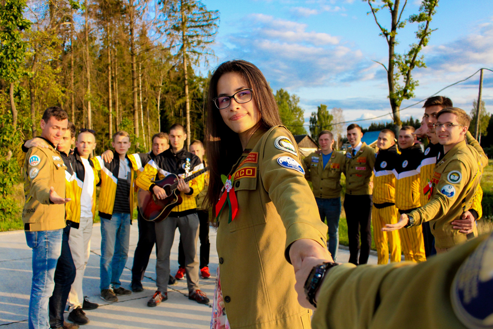
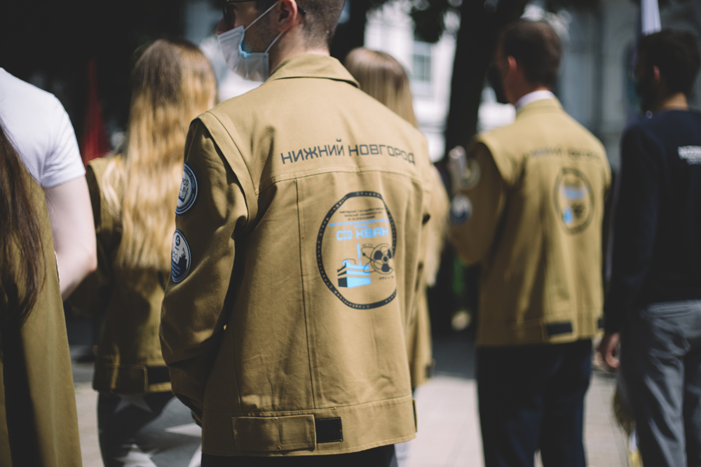
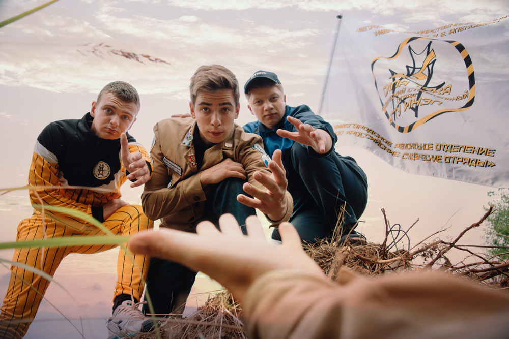
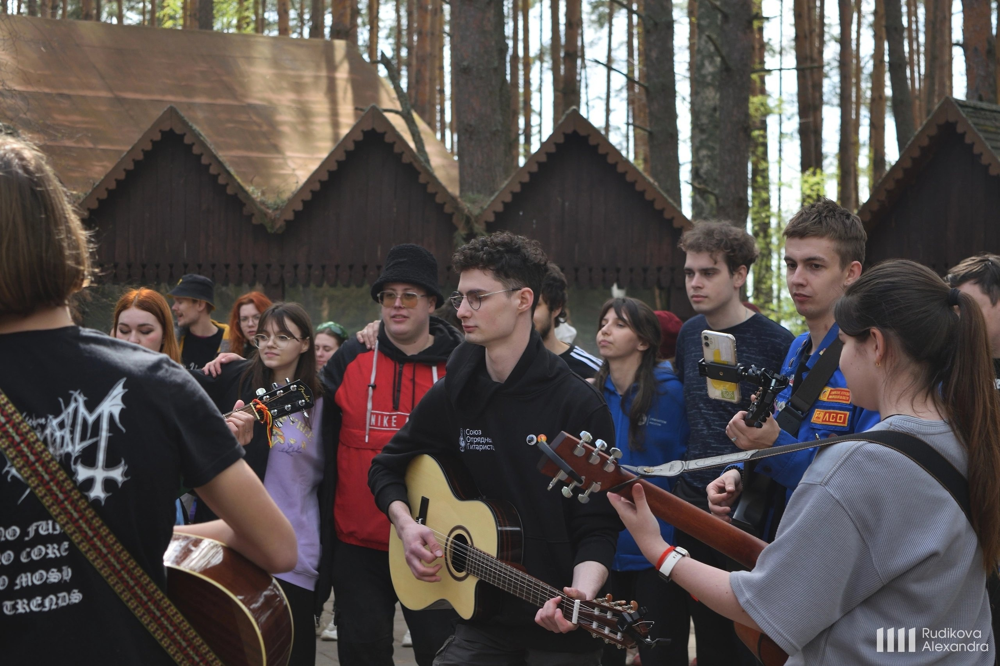
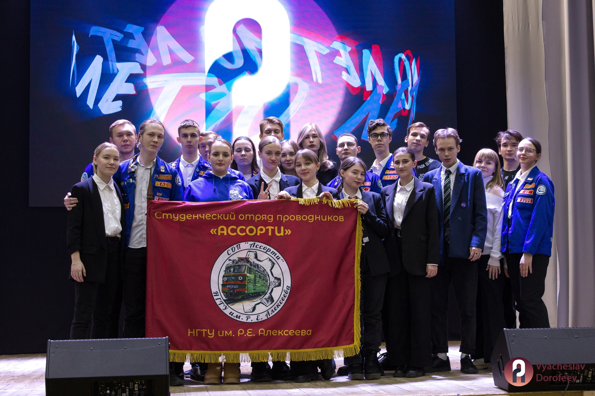
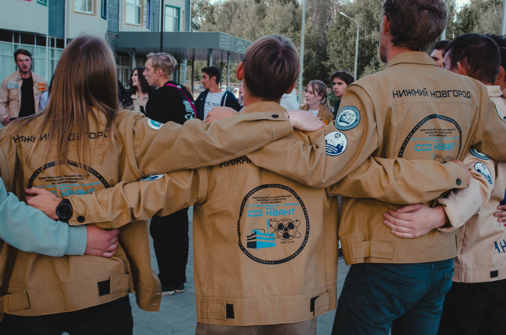

Студенческие отряды НГТУ им. Алексеева – это не просто студенческая организация, а дружный, сплоченный коллектив!
Летом, представители отрядов выезжают на целину по своим направлениям – вожатые, строители, проводники. Третий трудовой семестр (целина) - период летних каникул, когда студенты добровольно работают в составе студенческого отряда.
Во время работы летом и в течение подготовительного периода с сентября по июнь представители студенческих отрядов активно участвуют в огромном количестве разнообразных мероприятий, где каждый студент сможет найти что-то себе по душе.
Творчество, саморазвитие, квесты, интеллектуальные игры, спорт, волонтерство – это все про нас!
Студенческие отряды не только помогают разнообразить студенческую жизнь, но и развивают в студентах их личностные и профессиональные качества, подготавливают всесторонне развитых, конкурентоспособных, ориентированных на общественную работу лидеров, имеющих социально активную жизненную позицию.
На данный момент есть 10 студенческих отрядов НГТУ!
Строительные отряды:ССО «Сила тока» | ССО «Квант» | ССО «Эталон»
Отряды проводников:СОП «Альянс» | СОП «Ассорти»
Педагогические отряды:СПО «Всплеск» | СПО «Навсегда»
Профильные отряды:СИО «Питон» | СЭО «Энергия» | ССО «Ждановец»
     